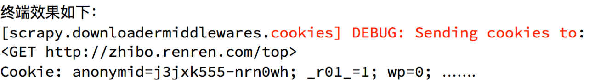

scrapy模拟登陆
学习目标：
- 应用 scrapy直接携带cookie模拟登陆的方法
- 应用 scrapy.FormRequest()发送post请求进行登陆
- 应用 scrapy.FormRequest.from_response()发送表单请求
1 回顾之前的模拟登陆的方法
1.1 requests模块是如何实现模拟登陆的？
- 直接携带cookies请求页面
- 找url地址，发送post请求存储cookie
1.2 selenium是如何模拟登陆的？
- 找到对应的input标签，输入文本点击登陆
1.3 scrapy有三种方法模拟登陆
- 直接携带cookies
- 找url地址，发送post请求来登录, 登录后scrapy默认会记录服务器设置过来的cookie信息.
- 找到对应的form表单，自动解析input标签，自动解析post请求的url地址，自动带上数据，自动发送请求
2 scrapy携带cookies直接获取需要登陆后的页面
2.1 应用场景
- cookie过期时间很长，常见于一些不规范的网站
- 能在cookie过期之前把所有的数据拿到
- 配合其他程序使用，比如其使用selenium把登陆之后的cookie获取到保存到本地，scrapy发送请求之前先读取本地cookie
2.2 实现：重构scrapy的start_rquests方法
scrapy中start_url是通过start_requests来进行处理的，其实现代码如下
def start_requests(self):
cls = self.__class__
if method_is_overridden(cls, Spider, 'make_requests_from_url'):
warnings.warn(
"Spider.make_requests_from_url method is deprecated; it "
"won't be called in future Scrapy releases. Please "
"override Spider.start_requests method instead (see %s.%s)." % (
cls.__module__, cls.__name__
),
)
for url in self.start_urls:
yield self.make_requests_from_url(url)
else:
for url in self.start_urls:
yield Request(url, dont_filter=True)
所以对应的，如果start_url地址中的url是需要登录后才能访问的url地址，则需要重写start_request方法并在其中手动添加上cookie
2.3 携带cookies登陆github
import scrapy
import re
class Login1Spider(scrapy.Spider):
name = 'login1'
allowed_domains = ['github.com']
start_urls = ['https://github.com/NoobPythoner'] # 这是一个需要登陆以后才能访问的页面
def start_requests(self): # 重构start_requests方法
# 这个cookies_str是抓包获取的
cookies_str = '...' # 抓包获取
# 将cookies_str转换为cookies_dict
cookies_dict = {i.split('=')[0]:i.split('=')[1] for i in cookies_str.split('; ')}
yield scrapy.Request(
self.start_urls[0],
callback=self.parse,
cookies=cookies_dict
)
def parse(self, response): # 通过正则表达式匹配用户名来验证是否登陆成功
result_list = re.findall(r'noobpythoner|NoobPythoner', response.body.decode())
print(result_list)
pass
注意：
- scrapy中cookie不能够放在headers中，在构造请求的时候有专门的cookies参数，能够接受字典形式的coookie
- 在setting中设置ROBOTS协议、USER_AGENT
3. scrapy.FormRequest发送post请求
我们知道可以通过scrapy.Request()指定method、body参数来发送post请求；那么也可以使用scrapy.FormRequest()来发送post请求
3.1 scrapy.FormRequest()的使用
通过scrapy.FormRequest能够发送post请求，同时需要添加fromdata参数作为请求体，以及callback
yield scrapy.FormRequest(
"https://github.com/session",
formdata={
"authenticity_token":authenticity_token,
"utf8":utf8,
"commit":commit,
"login":"noobpythoner",
"password":"zhoudawei123"
},
callback=self.parse_login
)
3.2 使用scrapy.FormRequest()登陆github
3.2.1 思路分析
找到post的url地址：点击登录按钮进行抓包，然后定位url地址为https://github.com/session
找到请求体的规律：分析post请求的请求体，其中包含的参数均在前一次的响应中
否登录成功：通过请求个人主页，观察是否包含用户名
3.2.2 代码实现如下：
import scrapy
import re
class Login2Spider(scrapy.Spider):
name = 'login2'
allowed_domains = ['github.com']
start_urls = ['https://github.com/login']
def parse(self, response):
authenticity_token = response.xpath("//input[@name='authenticity_token']/@value").extract_first()
utf8 = response.xpath("//input[@name='utf8']/@value").extract_first()
commit = response.xpath("//input[@name='commit']/@value").extract_first()
#构造POST请求，传递给引擎
yield scrapy.FormRequest(
"https://github.com/session",
formdata={
"authenticity_token":authenticity_token,
"utf8":utf8,
"commit":commit,
"login":"noobpythoner",
"password":"***"
},
callback=self.parse_login
)
def parse_login(self,response):
ret = re.findall(r"noobpythoner|NoobPythoner",response.text)
print(ret)
4. scrapy自动提交表单
4.1 scrapy.Formrequest.from_response
它能够自动的从响应中寻找form表单，然后把formdata中的数据提交到action对应的url地址中
yield scrapy.FormRequest.from_response(
response, # 传入response对象,自动解析
# 可以通过xpath来定位form表单,当前页只有一个form表单时,将会自动定位
formxpath='//*[@id="login"]/form', # 可以不写
formdata={'login': 'noobpythoner', 'password': '***'},
callback=self.parse_login
)
4.2 使用scrapy.Formrequest.from_response登陆github
import scrapy
import re
class Login3Spider(scrapy.Spider):
name = 'login3'
allowed_domains = ['github.com']
start_urls = ['https://github.com/login']
def parse(self, response):
yield scrapy.FormRequest.from_response(
response, # 传入response对象,自动解析
# 可以通过xpath来定位form表单,当前页只有一个form表单时,将会自动定位
formxpath='//*[@id="login"]/form',
formdata={'login': 'noobpythoner', 'password': 'zhoudawei123'},
callback=self.parse_login
)
def parse_login(self,response):
ret = re.findall(r"noobpythoner|NoobPythoner", response.text)
print(ret)
5. 小技巧
在settings.py中通过设置COOKIES_DEBUG=TRUE 能够在终端看到cookie的传递传递过程 
总结
- start_urls中的url地址是交给start_request处理的，如有必要，可以重写start_request函数
- 直接携带cookie登陆：cookie只能传递给cookies参数接收
- scrapy.FormRequest()发送post请求
- scrapy.FormRequest.from_response()发送表单请求，接收的是response